Fixture-assisted runs at four viewport sizes. Captures are annotated against the production bible. Automated functional passes do not certify texture consistency or AAA presentation.
P1 · Entry / story ownership
entry standup
Functional entry and skip checks passed in the preceding capture. Visual finding: portrait dialogue covers the crew, while arrival toast and day title compete above it. Next: stage speakers in the visible area and sequence arrival UI before dialogue.
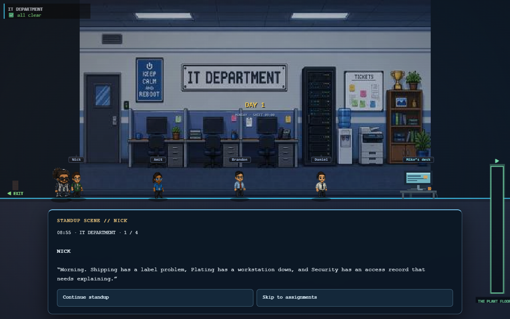
desktop · 1280 × 800 Functional entry and skip checks passed in the preceding capture. Visual finding: portrait dialogue covers the crew, while arrival toast and day title compete above it. Next: stage speakers in the visible area and sequence arrival UI before dialogue.
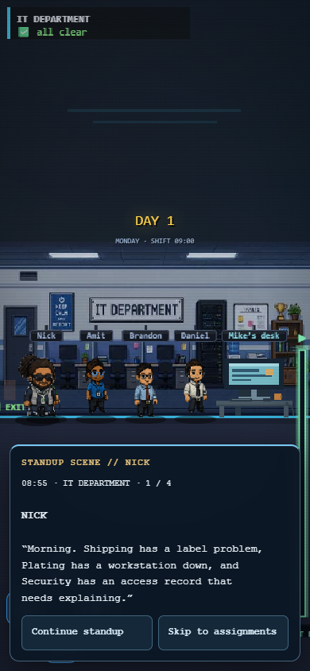
portrait · 390 × 844 Functional entry and skip checks passed in the preceding capture. Visual finding: portrait dialogue covers the crew, while arrival toast and day title compete above it. Next: stage speakers in the visible area and sequence arrival UI before dialogue.
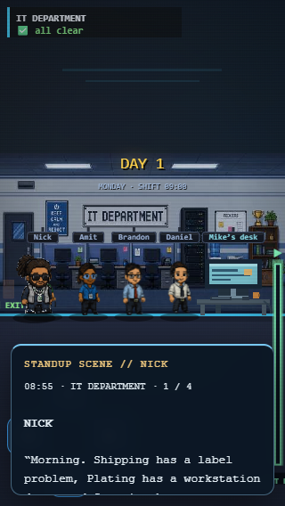
compact · 320 × 568 Functional entry and skip checks passed in the preceding capture. Visual finding: portrait dialogue covers the crew, while arrival toast and day title compete above it. Next: stage speakers in the visible area and sequence arrival UI before dialogue.
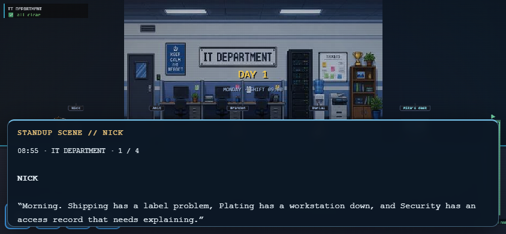
landscape · 844 × 390 Functional entry and skip checks passed in the preceding capture. Visual finding: portrait dialogue covers the crew, while arrival toast and day title compete above it. Next: stage speakers in the visible area and sequence arrival UI before dialogue.
P1 · Spatial affordance
side room desk
Desk is visible and keyboard approach opens the workstation. Narrow-screen prompt is now clamped to the canvas. Remaining: excessive portrait headroom and a foreground desk whose detail level differs from the backdrop.
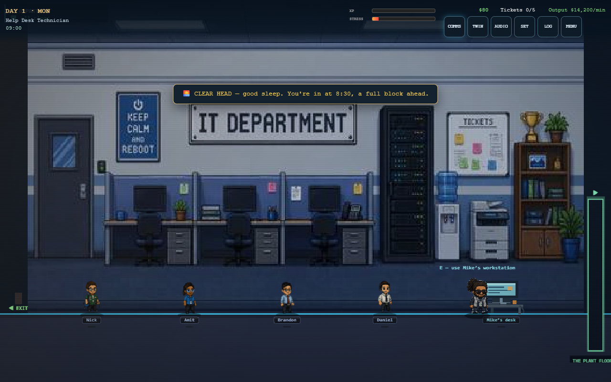
desktop · 1280 × 800 Desk is visible and keyboard approach opens the workstation. Narrow-screen prompt is now clamped to the canvas. Remaining: excessive portrait headroom and a foreground desk whose detail level differs from the backdrop.
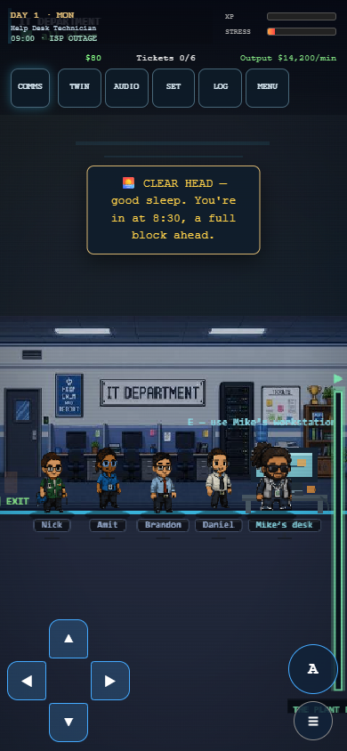
portrait · 390 × 844 Desk is visible and keyboard approach opens the workstation. Narrow-screen prompt is now clamped to the canvas. Remaining: excessive portrait headroom and a foreground desk whose detail level differs from the backdrop.
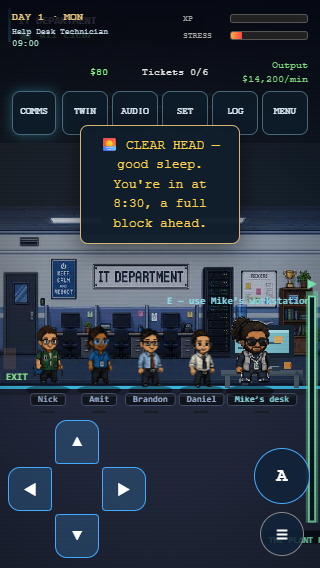
compact · 320 × 568 Desk is visible and keyboard approach opens the workstation. Narrow-screen prompt is now clamped to the canvas. Remaining: excessive portrait headroom and a foreground desk whose detail level differs from the backdrop.
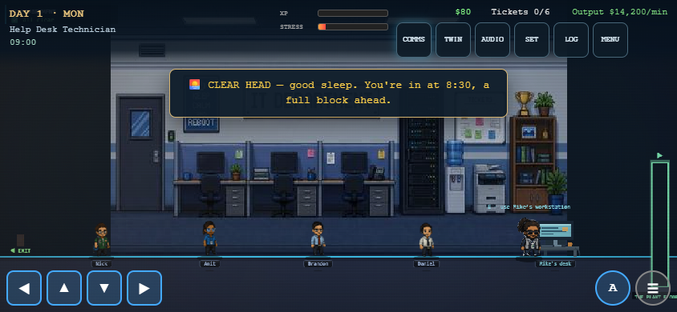
landscape · 844 × 390 Desk is visible and keyboard approach opens the workstation. Narrow-screen prompt is now clamped to the canvas. Remaining: excessive portrait headroom and a foreground desk whose detail level differs from the backdrop.
P1 · Dialogue specificity
requester conversation
Questions must concern this incident and department. Answers must remain visible and already-discussed topics must not repeat.
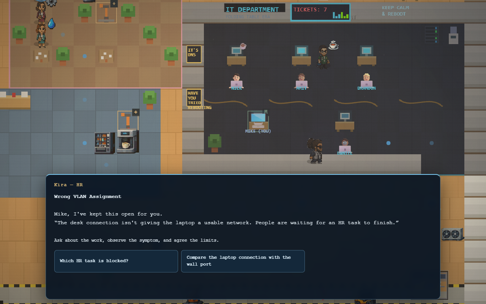
desktop · 1280 × 800 Questions must concern this incident and department. Answers must remain visible and already-discussed topics must not repeat.
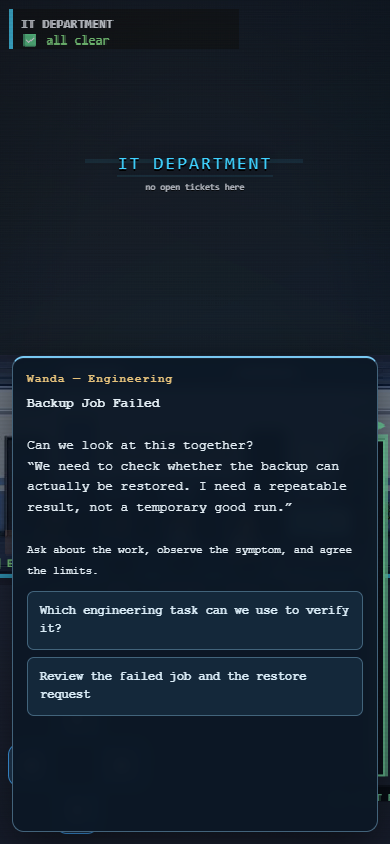
portrait · 390 × 844 Questions must concern this incident and department. Answers must remain visible and already-discussed topics must not repeat.
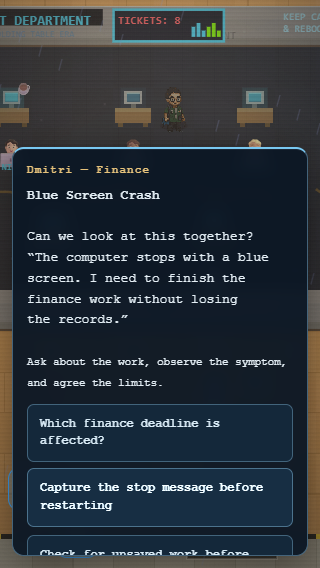
compact · 320 × 568 Questions must concern this incident and department. Answers must remain visible and already-discussed topics must not repeat.
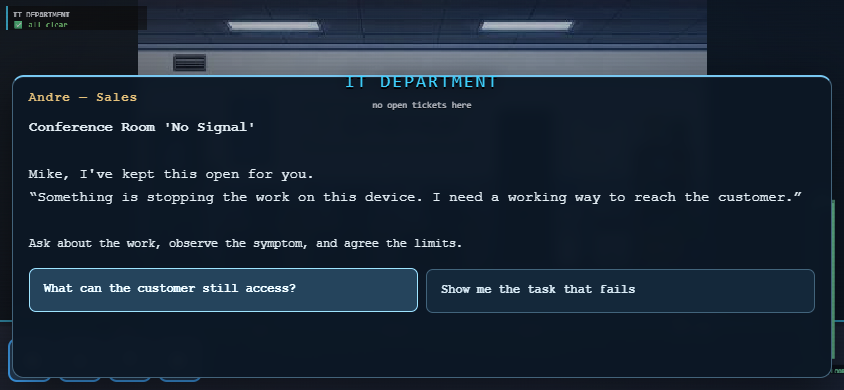
landscape · 844 × 390 Questions must concern this incident and department. Answers must remain visible and already-discussed topics must not repeat.
P1 · Interface hierarchy
simulated desktop
Local desktop only at the physical desk; working window controls and readable touch targets.
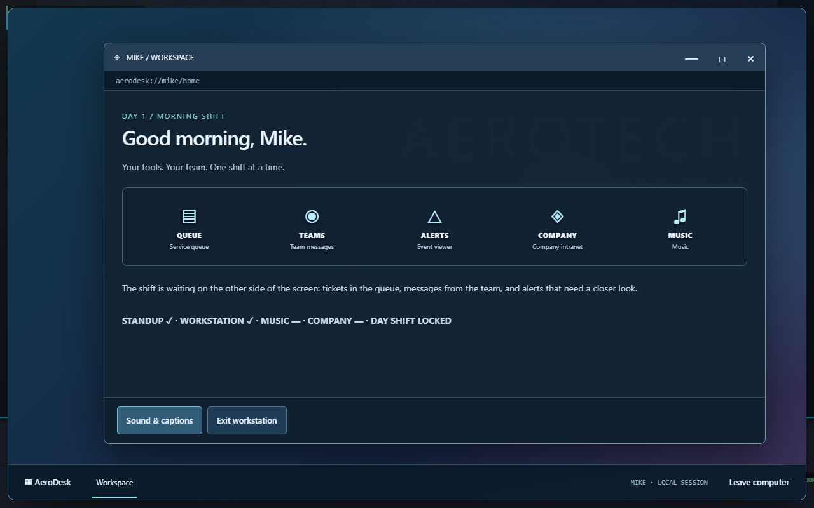
desktop · 1280 × 800 Local desktop only at the physical desk; working window controls and readable touch targets.
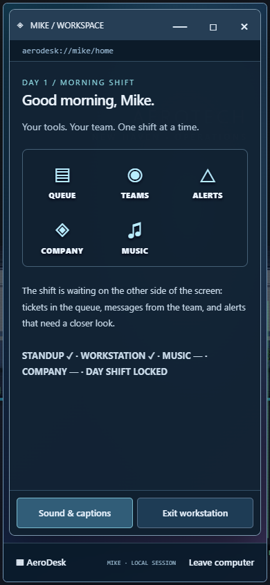
portrait · 390 × 844 Local desktop only at the physical desk; working window controls and readable touch targets.
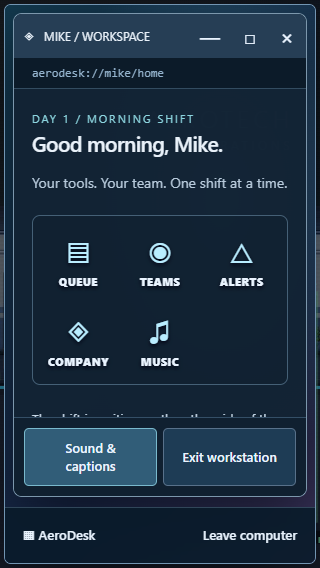
compact · 320 × 568 Local desktop only at the physical desk; working window controls and readable touch targets.
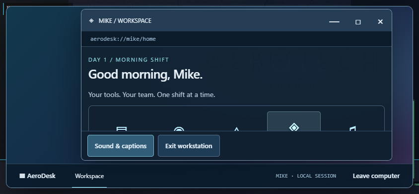
landscape · 844 × 390 Local desktop only at the physical desk; working window controls and readable touch targets.
P2 · Texture / art direction
company cutscene
Review photoreal media versus pixel characters. Functional capture is not art approval; visual consistency remains an authored asset task.
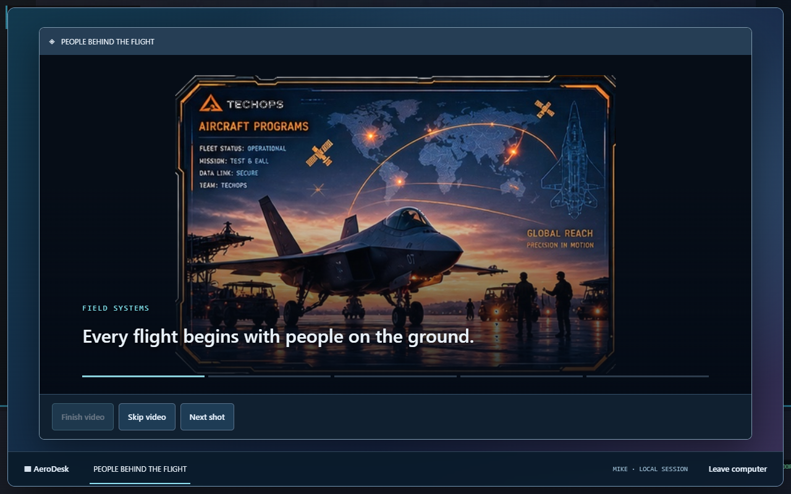
desktop · 1280 × 800 Review photoreal media versus pixel characters. Functional capture is not art approval; visual consistency remains an authored asset task.
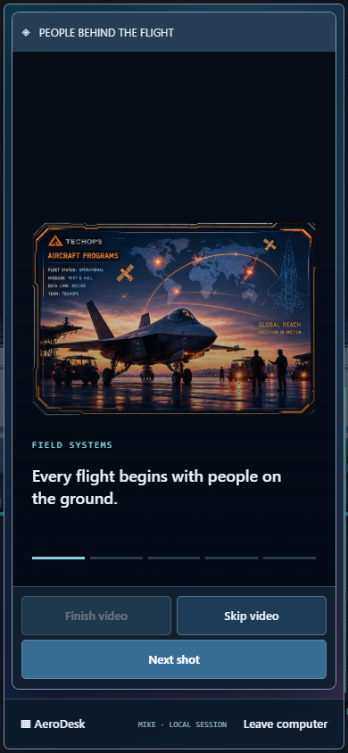
portrait · 390 × 844 Review photoreal media versus pixel characters. Functional capture is not art approval; visual consistency remains an authored asset task.
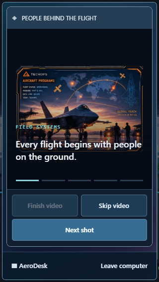
compact · 320 × 568 Review photoreal media versus pixel characters. Functional capture is not art approval; visual consistency remains an authored asset task.
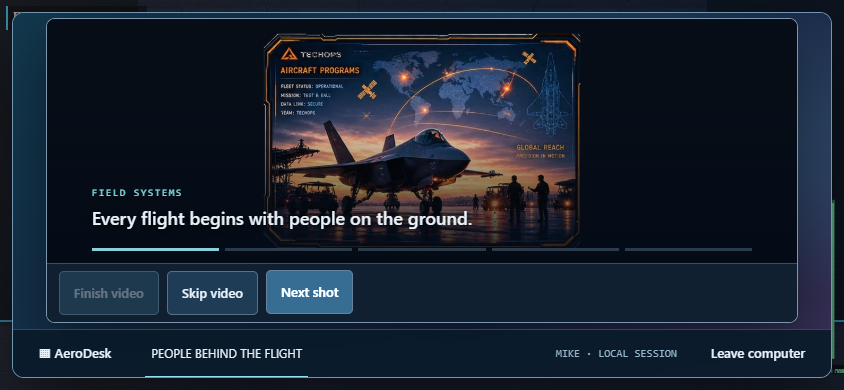
landscape · 844 × 390 Review photoreal media versus pixel characters. Functional capture is not art approval; visual consistency remains an authored asset task.
P1 · Evidence before action
printer inspection
Inspection targets should lie on components and reveal supported observations. Diagram style versus world texture needs art review.
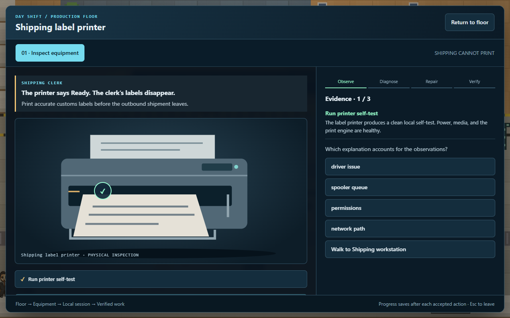
desktop · 1280 × 800 Inspection targets should lie on components and reveal supported observations. Diagram style versus world texture needs art review.
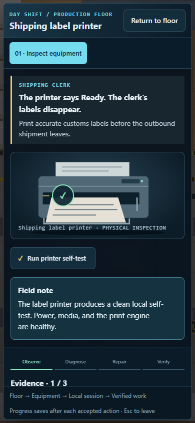
portrait · 390 × 844 Inspection targets should lie on components and reveal supported observations. Diagram style versus world texture needs art review.
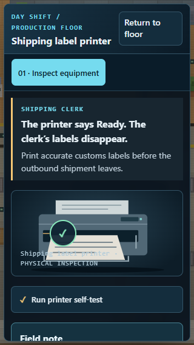
compact · 320 × 568 Inspection targets should lie on components and reveal supported observations. Diagram style versus world texture needs art review.
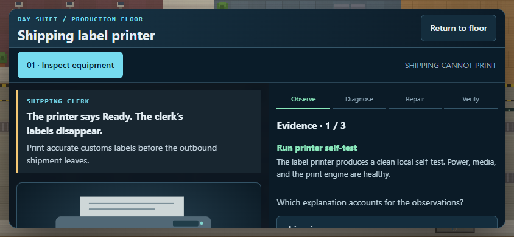
landscape · 844 × 390 Inspection targets should lie on components and reveal supported observations. Diagram style versus world texture needs art review.
P2 · World texture consistency
floor
Observed: top-down props, flat desk tiles and detailed side-room art have different pixel density and lighting. Next: choose one pixel grid, palette and light direction, then replace inconsistent props in both views.
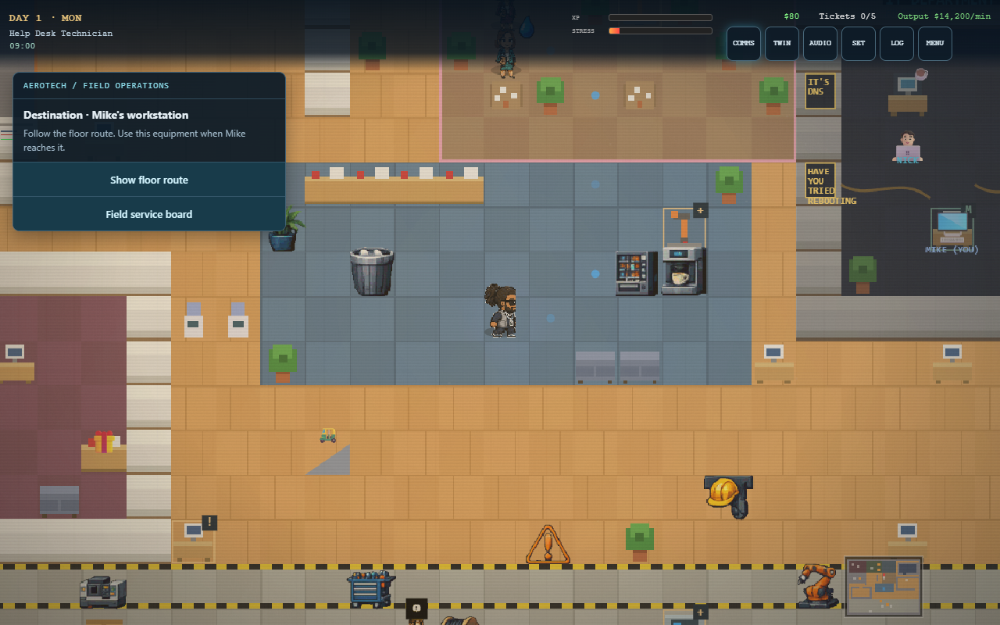
desktop · 1280 × 800 Observed: top-down props, flat desk tiles and detailed side-room art have different pixel density and lighting. Next: choose one pixel grid, palette and light direction, then replace inconsistent props in both views.
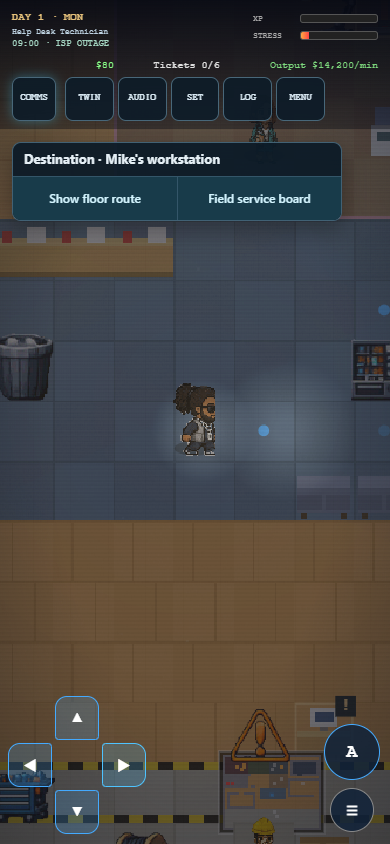
portrait · 390 × 844 Observed: top-down props, flat desk tiles and detailed side-room art have different pixel density and lighting. Next: choose one pixel grid, palette and light direction, then replace inconsistent props in both views.
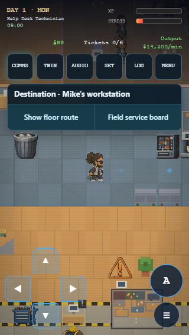
compact · 320 × 568 Observed: top-down props, flat desk tiles and detailed side-room art have different pixel density and lighting. Next: choose one pixel grid, palette and light direction, then replace inconsistent props in both views.
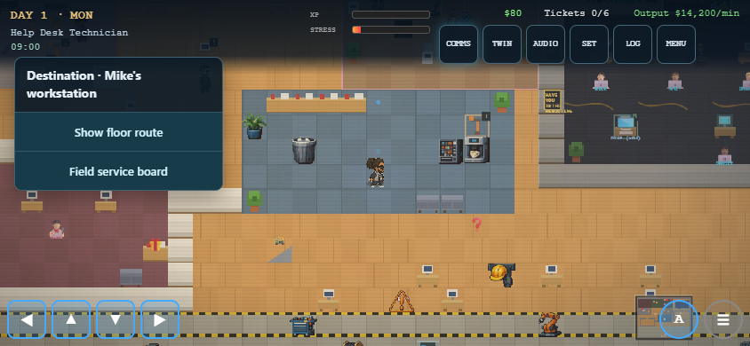
landscape · 844 × 390 Observed: top-down props, flat desk tiles and detailed side-room art have different pixel density and lighting. Next: choose one pixel grid, palette and light direction, then replace inconsistent props in both views.